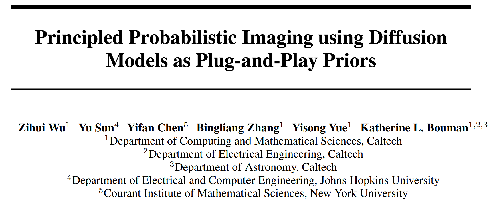
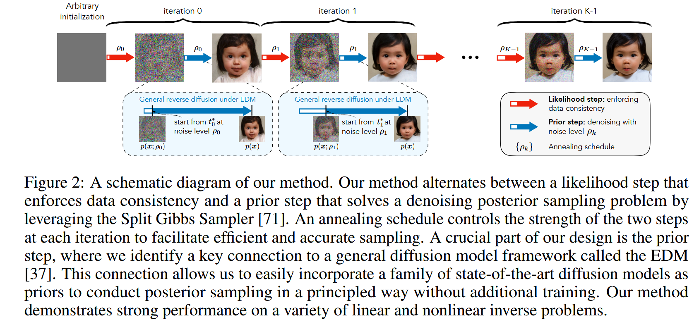
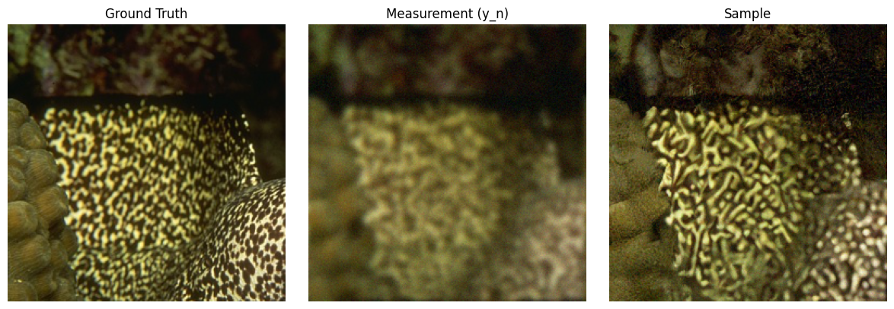

Principled Probabilistic Imaging using Diffusion Models as Plug-and-Play Priors#
 Code: GitHub Repository https://github.com/zihuiwu/PnP-DM-public, Source Code in My Repo: ../../../../code/PnP/PnP-DM-public-master/posterior_sample.py
1. Highlights#
While traditional guided diffusion heuristically guides generation toward observations, PnP-DM is a principled method that rigorously samples from the true posterior ( p(x|y) ), making it a fully Bayesian alternative with no approximations to the likelihood. The prior step handles \(p(x)\), which is entirely determined by the diffusion model.
2. Background#
Inverse problems are central to computational imaging. In recent years, diffusion models (DMs) have emerged as powerful generative models that can learn rich and high-dimensional image distributions from data [Ho et al., 2020; Song et al., 2021]. These models enable denoising-based sampling by reversing a noise-injection (diffusion) process. This has sparked interest in using DMs as priors for inverse problems.
However, existing approaches suffer from a key limitation: they either make simplifying assumptions that break the Bayesian formulation or resort to heuristic guidance that lacks theoretical grounding. For example, some methods approximate the intractable posterior score \(\nabla \log p_t(x_t|y)\) using:
But this is only exact under a Gaussian prior, which is too simplistic for real images. Other methods bypass this issue entirely by treating \(y\) as a conditioning signal, leading to empirically strong but theoretically ungrounded solutions.
This paper addresses these issues by proposing a principled and theoretically sound method for posterior sampling with DMs as priors.
Specifically, the authors introduce a Plug-and-Play Diffusion Model (PnP-DM) framework built on the Split Gibbs Sampler (SGS).This allows the method to handle both linear and nonlinear, even severely ill-posed inverse problems (e.g., black hole imaging), while offering accurate uncertainty quantification.
3. Method Overview#
The core of this paper is a Bayesian sampling framework that separates the influence of data (likelihood) and prior (image distribution) in a principled way. The proposed method, called Plug-and-Play Diffusion Models (PnP-DM), is based on the Split Gibbs Sampler (SGS).
3.1 From Posterior Sampling to Gibbs Sampling#
The target is to sample from the posterior distribution:
where:
\(f(x; y) := -\log p(y|x)\) is the likelihood potential
\(g(x) := -\log p(x)\) is the prior potential
Directly sampling from this posterior is hard. So the authors introduce an auxiliary variable \(z\) and define a joint distribution:
This leads to a Gibbs sampler that alternates between: 
Likelihood step: sample \(z\) from \(\pi(z|x)\) (red arrow in the Figure)
Prior step: sample \(x\) from \(\pi(x|z)\) (blue arrow in the Figure)
As \(\rho \to 0\), the marginal of \(\pi(x, z)\) over \(x\) converges to \(p(x|y)\).
3.1.1 Likelihood Step#
In the likelihood step, we need to sample \(z\) from the conditional distribution \(\pi(z|x)\), which incorporates the observation \(y\). This step enforces data consistency—i.e., it makes sure that the sample is plausible under the observed measurements.
3.1.1.1 Case 1: Linear Forward Model + Gaussian Noise#
Suppose the forward model is linear, i.e., \(A(x) = Ax\), and the noise is Gaussian: \(n \sim \mathcal{N}(0, \Sigma)\). Then the observation model is:
The likelihood is therefore a Gaussian:
Taking the negative log, the likelihood potential becomes:
where \(\|v\|^2_\Sigma := v^\top \Sigma^{-1} v\) is the Mahalanobis norm.
Now recall the joint distribution:
This is the product of two Gaussians:
One centered at \(z \approx A^{-1} y\)
One centered at \(z \approx x\)
Combining two Gaussians gives another Gaussian. Therefore, \(\pi(z|x)\) is Gaussian:
with:
So, in the linear + Gaussian case, we can directly draw \(z\) from this distribution using standard Gaussian sampling.
3.1.1.2 Case 2: Nonlinear Forward Model#
If the forward model \(A(\cdot)\) is nonlinear, or the noise is non-Gaussian, then the distribution \(\pi(z|x)\) is no longer Gaussian and no closed-form exists.
But we can still compute the unnormalized log-probability:
As long as \(f(z; y)\) is differentiable, we can sample from this distribution using Langevin dynamics:
This stochastic differential equation (SDE) gradually moves \(z_t\) toward regions of high probability.
In practice, we discretize this SDE using Euler steps:
z = x
for t in range(T):
grad = -∇f(z; y) - (1/ρ²) * (z - x)
z = z + η * grad + √(2η) * Normal(0, I)
This is what the authors use for general (nonlinear) inverse problems.
3.1.2 Prior Step: Sampling via Diffusion Models#
This is the heart of the method. The prior step corresponds to sampling:
This is a Bayesian denoising problem: observe \(z = x + \text{Gaussian noise}\), infer \(x\) using the prior \(p(x) \propto \exp(-g(x))\).
3.2 EDM Formulation#
Diffusion models in the EDM framework solve the denoising problem via the following reverse SDE:
Key components:
\(s(t)\) and \(\sigma(t)\): scaling and noise schedules
\(x_t / s(t) \sim p(x; \sigma(t))\): mollified distribution by Gaussian noise
\(x_0\) is the final clean sample
To apply this to the prior step:
Set \(\sigma(t^*) = \rho\)
Initialize \(x_{t^*} = s(t^*) z\)
Solve the reverse SDE backward to \(t = 0\)
This allows the use of any pretrained DM that fits the EDM interface, without retraining or modifying the model.
import os
import sys
print("Current working directory:", os.getcwd())
target_path = os.path.abspath(os.path.join(os.getcwd(), "../../../code/PnP/PnP-DM-public-master/"))
print("Appending path:", target_path)
sys.path.insert(0, target_path)
import hydra
import torch, os, hydra, logging
import numpy as np
import matplotlib.pyplot as plt
from tqdm import tqdm
from collections import defaultdict
from torchvision import transforms
from pnpdm.data import get_dataset, get_dataloader
from pnpdm.tasks import get_operator, get_noise, MotionBlurCircular
from pnpdm.models import get_model
from pnpdm.samplers import get_sampler
from hydra.core.hydra_config import HydraConfig
from monai.metrics import PSNRMetric, SSIMMetric
from taming.modules.losses.lpips import LPIPS
@hydra.main(version_base="1.2", config_path="configs", config_name="default")
def posterior_sample(cfg):
# load configurations
data_config = cfg.data
task_config = cfg.task
model_config = cfg.model
sampler_config = cfg.sampler
# device setting
device_str = f"cuda:{cfg.gpu}" if torch.cuda.is_available() else 'cpu'
device = torch.device(device_str)
# prepare task (forward model and noise)
operator = get_operator(task_config.operator, device=device)
noiser = get_noise(task_config.noise)
# prepare dataloader
transform = transforms.Compose([
transforms.Normalize((0.5), (0.5))
])
inv_transform = transforms.Compose([
transforms.Normalize((-1), (2)),
transforms.Lambda(lambda x: x.clamp(0, 1).detach())
])
# inv_transform = transforms.Compose([
# transforms.Normalize((-1), (2)),
# transforms.Lambda(lambda x: (x.clamp(0, 1)0.4).detach())
# ])
dataset = get_dataset(data_config, transform=transform)
num_test_images = len(dataset)
dataloader = get_dataloader(dataset, batch_size=1, num_workers=0, train=False)
# load model
model = get_model(model_config)
model = model.to(device)
model.eval()
# load sampler
sampler = get_sampler(sampler_config, model=model, operator=operator, noiser=noiser, device=device)
# working directory
exp_name = '_'.join([dataset.display_name, operator.display_name, noiser.display_name, sampler.display_name])
exp_name += '' if len(cfg.add_exp_name) == 0 else '_' + cfg.add_exp_name
logger = logging.getLogger(exp_name)
out_path = os.path.join("results", exp_name)
os.makedirs(out_path, exist_ok=True)
for img_dir in ['gt', 'meas', 'recon', 'progress']:
os.makedirs(os.path.join(out_path, img_dir), exist_ok=True)
# inference
meta_log = defaultdict(list)
meta_log["statistics_based_on_one_sample"] = defaultdict(list)
meta_log["statistics_based_on_mean"] = defaultdict(list)
metrics = {
'psnr': PSNRMetric(max_val=1),
'ssim': SSIMMetric(spatial_dims=2),
'lpips': LPIPS().to(device).eval(),
}
for i, ref_img in enumerate(dataloader):
logger.info(f"Inference for image {i} on device {device_str}")
file_idx = f"{i:05d}"
ref_img = ref_img.to(device)
cmap = 'gray' if ref_img.shape[1] == 1 else None
# regenerate kernel for motion blur
if isinstance(operator, MotionBlurCircular):
operator.generate_kernel_(seed=i)
# forward measurement model (Ax + n)
y_n = noiser(operator.forward(ref_img))
# logging
log = defaultdict(list)
log["consistency_gt"] = torch.norm(operator.forward(ref_img) - y_n).item()
log["gt"] = inv_transform(ref_img).permute(0, 2, 3, 1).squeeze().cpu().numpy()
plt.imsave(os.path.join(out_path, 'gt', file_idx+'.png'), log["gt"], cmap=cmap)
try:
log["meas"] = inv_transform(y_n.reshape(*ref_img.shape)).permute(0, 2, 3, 1).squeeze().cpu().numpy()
# log["meas"] = inv_transform(operator.forward(ref_img)).permute(0, 2, 3, 1).squeeze().cpu().numpy()
plt.imsave(os.path.join(out_path, 'meas', file_idx+'.png'), log["meas"], cmap=cmap)
if hasattr(operator, 'kernel'):
plt.imsave(os.path.join(out_path, 'meas', file_idx+'_kernel.png'), operator.kernel.detach().cpu())
except:
try:
# in case where y_n is bigger than ref_img
log["meas"] = inv_transform(y_n).permute(0, 2, 3, 1).squeeze().cpu().numpy()
plt.imsave(os.path.join(out_path, 'meas', file_idx+'.png'), log["meas"], cmap=cmap)
except:
log["meas"] = inv_transform(operator.A_pinv(y_n).reshape(*ref_img.shape)).permute(0, 2, 3, 1).squeeze().cpu().numpy()
plt.imsave(os.path.join(out_path, 'meas', file_idx+'_pinv.png'), log["meas"], cmap=cmap)
# sampling
for j in tqdm(range(cfg.num_runs)):
samples = sampler(
gt=ref_img,
y_n=y_n,
record=cfg.record,
fname=file_idx+f'_run_{j}',
save_root=out_path,
inv_transform=inv_transform,
metrics=metrics
)
samples = inv_transform(samples)
sample = samples[[-1]] # take the last sample as the single sample for calculating metrics
if len(samples) > 1:
mean, std = torch.mean(samples, dim=0, keepdim=True), torch.std(samples, dim=0, keepdim=True)
# logging
log["samples"].append(sample.permute(0, 2, 3, 1).squeeze().cpu().numpy())
for name, metric in metrics.items():
log[name+"_sample"].append(metric(sample, inv_transform(ref_img)).item())
log["consistency_sample"].append(torch.norm(operator.forward(transform(sample)) - y_n).item())
plt.imsave(os.path.join(out_path, 'recon', file_idx+f'_run_{j}_sample.png'), log["samples"][-1], cmap=cmap)
ref_np = inv_transform(ref_img).permute(0, 2, 3, 1).squeeze().cpu().numpy()
y_n_np = inv_transform(y_n.reshape(*ref_img.shape)).permute(0, 2, 3, 1).squeeze().cpu().numpy()
sample_np = log["samples"][-1]
# 保存每一张图
plt.imsave(os.path.join(out_path, 'recon', file_idx+f'_run_{j}_gt.png'), ref_np, cmap=cmap)
plt.imsave(os.path.join(out_path, 'recon', file_idx+f'_run_{j}_yn.png'), y_n_np, cmap=cmap)
plt.imsave(os.path.join(out_path, 'recon', file_idx+f'_run_{j}_sample.png'), sample_np, cmap=cmap)
# 分开显示，每幅图独立 + 标题
fig, axs = plt.subplots(1, 3, figsize=(12, 4))
axs[0].imshow(ref_np, cmap=cmap)
axs[0].set_title("Ground Truth")
axs[0].axis("off")
axs[1].imshow(y_n_np, cmap=cmap)
axs[1].set_title("Measurement (y_n)")
axs[1].axis("off")
axs[2].imshow(sample_np, cmap=cmap)
axs[2].set_title("Sample")
axs[2].axis("off")
plt.tight_layout()
plt.show()
if len(samples) > 1:
log["means"].append(mean.permute(0, 2, 3, 1).squeeze().cpu().numpy())
log["stds"].append(std.permute(0, 2, 3, 1).squeeze().cpu().numpy())
for name, metric in metrics.items():
log[name+"_mean"].append(metric(mean, inv_transform(ref_img)).item())
log["consistency_mean"].append(torch.norm(operator.forward(transform(mean)) - y_n).item())
plt.imsave(os.path.join(out_path, 'recon', file_idx+f'_run_{j}_mean.png'), log["means"][-1], cmap=cmap)
# plt.imsave(os.path.join(out_path, 'recon', file_idx+f'_run_{j}_std.png'), log["stds"][-1], cmap=cmap)
np.save(os.path.join(out_path, 'recon', file_idx+'_log.npy'), log)
with open(os.path.join(out_path, 'recon', file_idx+'_metrics.txt'), "w") as f:
f.write(f'Statistics based on ONE sample for each run ({cfg.num_runs} runs in total):\n')
f.write('\n')
for name, _ in metrics.items():
f.write(f'{name} (avg over {cfg.num_runs} runs): {np.mean(log[name+"_sample"])}\n')
f.write(f'consistency_sample (avg over {cfg.num_runs} runs): {np.mean(log["consistency_sample"])}\n')
f.write('\n')
for name, _ in metrics.items():
best_fn = np.amin if name == 'lpips' else np.amax
f.write(f'{name} (best among {cfg.num_runs} runs): {best_fn(log[name+"_sample"])}\n')
f.write(f'consistency_sample (best among {cfg.num_runs} runs): {np.amin(log["consistency_sample"])}\n')
if len(samples) > 1:
f.write('\n')
f.write('='*70+'\n')
f.write('\n')
f.write(f'Statistics based on the mean over {len(samples)} samples for each run ({cfg.num_runs} runs in total):\n')
f.write('\n')
for name, _ in metrics.items():
f.write(f'{name} (avg over {cfg.num_runs} runs): {np.mean(log[name+"_mean"])}\n')
f.write(f'consistency_mean (avg over {cfg.num_runs} runs): {np.mean(log["consistency_mean"])}\n')
f.write('\n')
for name, _ in metrics.items():
best_fn = np.amin if name == 'lpips' else np.amax
f.write(f'{name} (best among {cfg.num_runs} runs): {best_fn(log[name+"_mean"])}\n')
f.write(f'consistency_mean (best among {cfg.num_runs} runs): {np.amin(log["consistency_mean"])}\n')
f.write('\n')
f.write('='*70+'\n')
f.write('\n')
f.write(f'consistency (gt): {log["consistency_gt"]}\n')
f.close()
# meta logging
meta_log["consistency_gt"].append(log["consistency_gt"])
sample_recon_mean = torch.mean(torch.from_numpy(np.array(log["samples"])), dim=0)
if len(sample_recon_mean.shape) == 2:
sample_recon_mean = sample_recon_mean.unsqueeze(2) # add a channel dimension
sample_recon_mean = sample_recon_mean.permute(2, 0, 1).unsqueeze(0).to(device)
for name, metric in metrics.items():
meta_log["statistics_based_on_one_sample"][name+"_mean_recon_of_all_runs"].append(metric(sample_recon_mean, inv_transform(ref_img)).item())
meta_log["statistics_based_on_one_sample"][name+"_last_of_all_runs"].append(log[name+"_sample"][-1])
best_fn = np.amin if name == 'lpips' else np.amax
meta_log["statistics_based_on_one_sample"][name+"_best_of_all_runs"].append(best_fn(log[name+"_sample"]))
meta_log["statistics_based_on_one_sample"]["consistency_mean_recon_of_all_runs"].append(torch.norm(operator.forward(transform(sample_recon_mean)) - y_n).item())
meta_log["statistics_based_on_one_sample"]["consistency_last_of_all_runs"].append(log["consistency_sample"][-1])
meta_log["statistics_based_on_one_sample"]["consistency_best_of_all_runs"].append(np.amin(log["consistency_sample"]))
if len(samples) > 1:
mean_recon_mean = torch.mean(torch.from_numpy(np.array(log["means"])), dim=0)
if len(mean_recon_mean.shape) == 2:
mean_recon_mean = mean_recon_mean.unsqueeze(2) # add a channel dimension
mean_recon_mean = mean_recon_mean.permute(2, 0, 1).unsqueeze(0).to(device)
for name, metric in metrics.items():
meta_log["statistics_based_on_mean"][name+"_mean_recon_of_all_runs"].append(metric(mean_recon_mean, inv_transform(ref_img)).item())
meta_log["statistics_based_on_mean"][name+"_last_of_all_runs"].append(log[name+"_mean"][-1])
best_fn = np.amin if name == 'lpips' else np.amax
meta_log["statistics_based_on_mean"][name+"_best_of_all_runs"].append(best_fn(log[name+"_mean"]))
meta_log["statistics_based_on_mean"]["consistency_mean_recon_of_all_runs"].append(torch.norm(operator.forward(transform(mean_recon_mean)) - y_n).item())
meta_log["statistics_based_on_mean"]["consistency_last_of_all_runs"].append(log["consistency_mean"][-1])
meta_log["statistics_based_on_mean"]["consistency_best_of_all_runs"].append(np.amin(log["consistency_mean"]))
# meta logging
np.save(os.path.join(out_path, 'meta_log.npy'), meta_log)
with open(os.path.join(out_path, 'meta_metrics.txt'), "w") as f:
f.write(f'Statistics based on ONE sample for each run ({cfg.num_runs} runs in total) of each test image:\n')
f.write('\n')
for name, _ in metrics.items():
f.write(f'{name}_mean_recon_of_{cfg.num_runs}_runs (avg over {num_test_images} test images): {np.mean(meta_log["statistics_based_on_one_sample"][name+"_mean_recon_of_all_runs"])}\n')
f.write(f'consistency_mean_recon_of_{cfg.num_runs}_runs (avg over {num_test_images} test images): {np.mean(meta_log["statistics_based_on_one_sample"]["consistency_mean_recon_of_all_runs"])}\n')
f.write('\n')
for name, _ in metrics.items():
f.write(f'{name}_last_of_{cfg.num_runs}_runs (avg over {num_test_images} test images): {np.mean(meta_log["statistics_based_on_one_sample"][name+"_last_of_all_runs"])}\n')
f.write(f'consistency_last_of_all_runs (avg over {num_test_images} test images): {np.mean(meta_log["statistics_based_on_one_sample"]["consistency_last_of_all_runs"])}\n')
f.write('\n')
for name, _ in metrics.items():
f.write(f'{name}_best_of_{cfg.num_runs}_runs (avg over {num_test_images} test images): {np.mean(meta_log["statistics_based_on_one_sample"][name+"_best_of_all_runs"])}\n')
f.write(f'consistency_best_of_all_runs (avg over {num_test_images} test images): {np.mean(meta_log["statistics_based_on_one_sample"]["consistency_best_of_all_runs"])}\n')
if len(samples) > 1:
f.write('\n')
f.write('='*70+'\n')
f.write('\n')
f.write(f'Statistics based on the mean over {len(samples)} samples for each run ({cfg.num_runs} runs in total) of each test image:\n')
f.write('\n')
for name, _ in metrics.items():
f.write(f'{name}_mean_recon_of_{cfg.num_runs}_runs (avg over {num_test_images} test images): {np.mean(meta_log["statistics_based_on_mean"][name+"_mean_recon_of_all_runs"])}\n')
f.write(f'consistency_mean_recon_of_{cfg.num_runs}_runs (avg over {num_test_images} test images): {np.mean(meta_log["statistics_based_on_mean"]["consistency_mean_recon_of_all_runs"])}\n')
f.write('\n')
for name, _ in metrics.items():
f.write(f'{name}_last_of_{cfg.num_runs}_runs (avg over {num_test_images} test images): {np.mean(meta_log["statistics_based_on_mean"][name+"_last_of_all_runs"])}\n')
f.write(f'consistency_last_of_all_runs (avg over {num_test_images} test images): {np.mean(meta_log["statistics_based_on_mean"]["consistency_last_of_all_runs"])}\n')
f.write('\n')
for name, _ in metrics.items():
f.write(f'{name}_best_of_{cfg.num_runs}_runs (avg over {num_test_images} test images): {np.mean(meta_log["statistics_based_on_mean"][name+"_best_of_all_runs"])}\n')
f.write(f'consistency_best_of_all_runs (avg over {num_test_images} test images): {np.mean(meta_log["statistics_based_on_mean"]["consistency_best_of_all_runs"])}\n')
f.write('\n')
f.write('='*70+'\n')
f.write('\n')
f.write(f'consistency (gt) (avg over {num_test_images} test images): {np.mean(meta_log["consistency_gt"])}\n')
f.close()
logger.info(f"Finished inference")
在当前单元格或上一个单元格中执行代码时 Kernel 崩溃。
请查看单元格中的代码，以确定故障的可能原因。
单击<a href='https://aka.ms/vscodeJupyterKernelCrash'>此处</a>了解详细信息。
有关更多详细信息，请查看 Jupyter <a href='command:jupyter.viewOutput'>log</a>。
from hydra import compose, initialize
from omegaconf import OmegaConf
if not hydra.core.global_hydra.GlobalHydra.instance().is_initialized():
initialize(config_path="configs", job_name="debug_sample")
cfg = compose(config_name="default", overrides=[
"+data=ffhq",
"+task=gaussian_deblur_circ",
"+model=edm_unet_adm_dps_ffhq",
"+sampler=pnp_edm",
"sampler.mode=vp_sde",
"sampler.rho=10",
"sampler.rho_decay_rate=0.9",
"sampler.rho_min=0.3",
"gpu=0",
"add_exp_name=anneal-0.9"
])
print(OmegaConf.to_yaml(cfg))
posterior_sample(cfg)

100%|██████████| 1/1 [00:40<00:00, 40.85s/it]
0%| | 0/1 [00:00<?, ?it/s]
PnPEDM: Code Explanation and Its Mathematical Backbone#
The PnPEDM class implements the PnP-DM algorithm introduced in the paper, combining a data-consistency step (likelihood) and a diffusion-based prior step using the EDM framework.
Key Mathematical Structure#
The algorithm targets the following joint distribution:
We alternate between:
Likelihood step: sample \(z \sim \pi(z|x)\)
Prior step: sample \(x \sim \pi(x|z)\)
The PnPEDM class performs this alternating procedure over multiple iterations.
1. Initialization#
x = self.operator.initialize(gt, y_n)
This initializes \(x^{(0)}\), usually using a naive pseudoinverse or other simple method based on \(y_n\).
2. Likelihood Step: Data Consistency#
z = self.operator.proximal_generator(x, y_n, self.noiser.sigma, rho_iter)
This approximates sampling from:
If the forward model is linear with Gaussian noise, this corresponds to sampling from a known Gaussian. If not, this operator may internally use gradient-based methods (e.g. Langevin).
This step ensures \(z\) is consistent with measurement \(y\).
3. Prior Step: Diffusion Denoising#
x = self.edm(z, rho_iter)
This corresponds to sampling from:
This is equivalent to a Bayesian denoising problem, where:
The noisy observation is \(z\)
The noise level is \(\rho\)
The prior \(p(x) \propto \exp(-g(x))\) is modeled by a pretrained diffusion model
The EDM framework provides a unified reverse-time SDE solver to sample from this distribution.
4. Annealing Schedule#
rho_iter = self.config.rho * (self.config.rho_decay_ratei)
rho_iter = max(rho_iter, self.config.rho_min)
This gradually reduces the noise level \(\rho\), similar to simulated annealing. It improves convergence and helps escape local minima in ill-posed problems.
5. Sample Collection#
if i in iters_count_as_sample:
samples.append(x)
After the burn-in phase, \(x\) samples are stored to approximate the posterior distribution \(p(x|y)\).
6. Metrics and Visualization#
The method logs PSNR, SSIM, LPIPS over iterations, and visualizes:
Denoised samples \(x\)
Data-consistent samples \(z\)
Ground truth \(gt\)
This helps track convergence and sample quality.
Summary#
The class PnPEDM is a direct implementation of the Split Gibbs Sampler:
The likelihood step ensures fidelity to measurements
The prior step leverages EDM to denoise using pretrained diffusion priors
An annealing schedule ensures smooth convergence
This setup allows principled posterior sampling using diffusion models for both linear and nonlinear inverse problems.